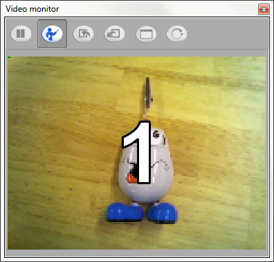
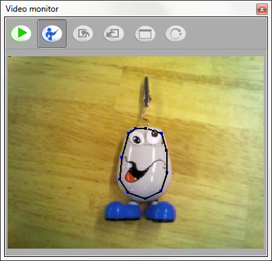
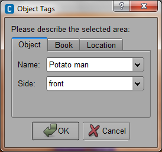

Recognizing objects¶
 Cannot be tested on a simulated robot, unless in a virtual world.
Cannot be tested on a simulated robot, unless in a virtual world.
See also
Teaching NAO to recognize objects¶
Using the Video monitor panel, NAO can learn images, objects and rooms to recognize.
| Step | Action |
|---|---|
| Make sure you are connected to a real robot or to a simulated robot evolving in a virtual world. | |
Choose View > Video monitor. The Video monitor panel appears and displays what the active camera is seeing. |
|
Click the Learn button. A 4 seconds countdown starts, it gives you time to place correctly the object you want to learn. At 0, the image switch to QVGA resolution and is captured. |
|
Click to draw, segment by segment, the contour of the object you want to learn. Note For a room, take the contour of the full image. As soon as you click again the first point to close the shape, a pop-up opens. |
|
Enter the information about the object, book or room:  |
|
Click OK. A feed-back message confirms if the learning is successful or not (due to bad quality of the input). |
|
If you want to learn other objects:
|
|
When you are done with learning objects, you can:
Note The database is not stored with the behavior but in a specific directory. To create several databases with different object lists or share it on other computers, you can clear, export and import the database using the dedicated buttons in the video monitor. For further details, see Video monitor panel functionalities. |
 button and
button and{kind=link}
{kind=link}
{kind=link}
Recognizing objects¶
Once a vision recognition database is created and launched on the robot, NAO can recognize the objects defined in the database.
| Step | Action |
|---|---|
| Make sure you are connected to a real robot or to a simulated robot evolving in a virtual world. | |
Make sure you have launched a vision recognition database on the robot. If not:
|
|
| Create a behavior using the Vision Reco box. | |
| Launch it so NAO can detect the newly learned objects. |
You can also create a Python script: ALVisionRecognition Tutorial.